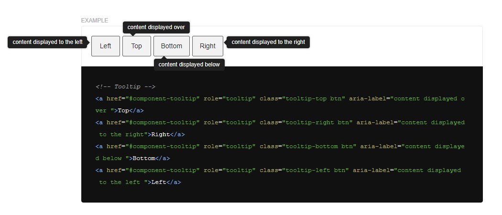

100 полезных приемов, лучших практик и бесплатных советов по HTML, CSS и JavaScript для начинающих и продолжающих frontend-разработчиков.

Семантика и доступность
1. Самые популярные HTML-теги – div и span. Это обычные контейнеры без всякого скрытого смысла.
2. Раньше они использовались для оформления всего и вся, но стандарт HTML5 принес много более подходящих тегов.
3. Сейчас у вас есть около 110 тегов на выбор. Вероятность того, что вы не сможете найти подходящий, очень мала.
Текст
4. Выбирая способ выделения текста, как следует подумайте, какой смысл вы в него вкладываете.
5. Например, теги b и strong выглядят одинаково (жирный текст), но первый не несет никакого смыслового значения, а второй подчеркивает важность выделенного фрагмента.
6. Такая же ситуация с i и em. И там, и там курсив, но em (emphasis) делает логический акцент на тексте, а i – нет.
7. Для заголовков используйте h1—h6.
8. Если выделенный текст не имеет семантической важности, лучше использовать для него обычный span. Например, так можно выделять иконки.
Разметка
9. Создавая новый структурный компонент, сфокусируйтесь на его семантике и подберите подходящие элементы.
10. Для верхних и нижних колонтитулов предназначены теги header и footer. На одной странице их может быть много, например, подвал сайта с контактными данными и подвал статьи с информацией об авторе.
11. А вот main в документе должен быть только один – в него помещается уникальная информация, отличающаяся от страницы к странице. Обычно разметка выглядит так:
12. Для семантического оформления контента используются теги article и section. Лучше понять разницу между ними поможет эта статья.
13. В двух словах article – это самостоятельный контент вроде статьи, заметки или комментария, который можно легко переместить куда-нибудь еще, например, поделиться в социальных сетях.
14. А section – это отдельный тематический раздел документа, как правило, с собственным заголовком.
15. Внутри article можно разместить блок address с контактной информацией.
16. Основная навигация страницы оформляется в виде тега nav.
17. Еще один полезный тег – noscript. Его роль – обеспечить обратную связь для пользователей с отключенным JavaScript.
18. Обязательно познакомьтесь со всеми существующими HTML-элементами в документации.
19. Многие семантические элементы имеют собственные стили по умолчанию, которые могут отличаться от вашего дизайна. Не бойтесь изменять их в вашем CSS.
20. Учитывайте иерархию и взаимосвязь элементов. У каждого тега есть разрешенный контент и допустимые родительские контейнеры. Узнать, какие именно, можно в MDN-документации.
21. Например, раньше внутрь тега a нельзя было помещать блочные элементы и заголовки. Чтобы сохранять валидность документа, нужно было делать ссылку дочерним элементом и абсолютно позиционировать поверх родителя.
22. В текущем стандарте тег a может сам служить контейнером для других элементов, кроме ссылок, и это очень удобно.
ARIA-атрибуты
23. Улучшить семантику и доступность проекта еще больше можно с помощью набора ARIA-атрибутов.
24. Например, для модальных окон используется атрибут role со значением dialog.
25. Обозначить основные шапку и подвал можно следующим образом:
26. Если у элемента нет видимой подписи, его можно обозначить с помощью атрибута aria-label.
27. Также очень просто скрыть декоративные элементы, например, иконки, от программы чтения с экрана:
28. ARIA-атрибуты можно комбинировать с псевдоэлементами CSS, создавая замечательные доступные компоненты вроде этого слайдера.
29. Используя готовые библиотеки компонентов, не поддавайтесь искушению удалить все семантические атрибуты. Доступность приложения должна быть для разработчика на первом месте.
30. WAI-ARIA приобретает еще большее значение, если в HTML-разметке не используются смысловые элементы. В этом случает только атрибуты могут обеспечить доступность страницы.
31. Доступность постепенно становится признанным стандартом frontend-разработки. Во многих странах она закрепляется на уровне законодательства. Поэтому не оставайтесь в стороне от прогресса, изучите лучшие практики создания доступных сайтов.
CSS
32. Многие HTML-элементы имеют стили, установленные по умолчанию. Например, display: block у div или display: inline у span. Нет необходимости явно указывать подобные свойства в вашем CSS-коде.
33. Пользуйтесь CSS-переменными для хранения базовых значений. Это позволяет избежать использования «магических чисел» и делает ваш код понятнее и проще для поддерживания.
34. Особенно полезно выносить в переменные значения z-index, с которыми иначе можно очень здорово запутаться:
Атрибуты
35. CSS замечательно сочетается с различными смысловыми HTML-атрибутами, что позволяет выделять семантически значимые элементы.
36. Например, можно стилизовать элементы с разным дефолтным языком текста (атрибут lang можно использовать с любым тегом, не только с html).
37. Или недоступные для взаимодействия элементы:
38. Не забывайте, что класс – это тоже атрибут, а значит, можно использовать такой селектор:
39. CSS позволяет отобрать классы (или любые другие атрибуты), значение которых содержит некоторую комбинацию символов:
40. Или даже одну из нескольких комбинаций, перечисленных через пробел:
41. Можно выбрать элементы, у которых значение атрибута начинается с конкретного слова, например, иконки:
42. Или безопасные ссылки:
43. Используя ARIA-атрибуты и CSS селекторы по атрибутам, можно создавать замечательные вещи, например, вот такие доступные всплывающие подсказки:

Псевдоселекторы
44. Псевдоклассы и псевдоэлементы CSS открывают огромные возможности для стилизации документа.
45. Например, можно скрыть пустые элементы:
46. Очень часто возникает задача сброса некоторых стилей у последнего элемента в группе, например, рамок или отступов. Раньше такому элементу приходилось добавлять специальный класс:
47. Псевдоклассы существенно упрощают эту задачу:
48. А есть решение еще лучше!
49. Несколько интересных и полезных примеров использования селектора :not вы можете найти здесь.
50. Псевдоклассы решают и более нетривиальные задачи. Они могут, например, изящно отобрать элементы, которые являются последним потомком родителя, но не единственным:
51. Псевдоэлементы :before и :after позволяют сделать из одного HTML-элемента целых три: один исходный родительский блок и два его псевдопотомка. Это открывает море возможностей для стилизации страницы.
52. Не забывайте, что эти псевдоэлементы не работают без свойства content, хотя бы пустого.
53. Обратите внимание, любое содержимое :before и :after не может иметь семантического значения и недоступно для скринридеров. Используйте их исключительно в декоративных целях.
54. Комбинируя псевдоэлементы и относительное позиционирование, можно регулировать соотношение сторон блока, что особенно полезно при работе с изображениями и медиаобъектами:
Комбинации селекторов
55. В CSS можно отбирать элементы на основе их окружения, например, по селекторам предыдущего соседа:
56. Или родителя:
57. Смело комбинируйте селекторы разных типов:
58. Вы можете создавать совершенно сумасшедшие комбинации. Например, вот эта выберет все заголовки с классом .title (кроме заголовков второго уровня), лежащие внутри блока .main, который в разметке находится после блока .header, не имеющего класса .active. Головокружительно!
59. Воспользовавшись свойствами радиокнопок и чекбоксов, можно делать интерактивные элементы, которые будут появляться и исчезать при нажатии:
Организация CSS
60. Тщательно анализируйте ваш код на предмет всего, что может быть повторно использовано, и делайте это компонентами.
61. Разрабатывая собственную расширяемую систему компонентов следуйте проверенным лучшим практикам frontend-разработки.
62. Избегайте распространенных ошибок в работе с каскадными таблицами стилей.
63. Используйте общепринятые соглашения об именовании классов, например, БЭМ, чтобы поддерживать ваш CSS в чистоте и порядке.
64. Но помните, что БЭМ – не панацея, и в некоторых случаях лучше обойтись без него.
65. Используйте CSS Modules и CSS-in-JS для обеспечения изоляции стилей разных модулей. Эти подходы позволяют больше не мучиться с именами классов. Вместо .header__title вы можете с чистой совестью писать просто .title.
66. Если вы не знакомы с модульными концепциями, загляните сюда.
67. Однако и тут есть недостатки, главный из которых – усложнение процесса разработки. Так что хорошо подумайте, прежде чем вводить CSS модули в ваш проект.
68. CSS-in-JS будет особенно полезен, если вы используете такие компонентные JavaScript-инструменты, как React или Vue.
69. Если вы работаете в команде, обязательно обсудите с коллегами (дизайнерами, frontend- и backend-разработчиками) способы организации CSS-кода и компонентную базу. Так вам будет проще выбрать и внедрить в проект подходящие вам инструменты.
Оптимизация CSS
70. Разные селекторы работают с разной скоростью. Учитывайте это, оптимизируя ваш код.
71. Самые быстрые – селекторы по идентификатору (#header). Дальше – в порядке убывания эффективности:
- классы –
.header - теги –
header - соседние элементы –
nav + header - непосредственный родитель –
main > h1 - простая вложенность –
main header - универсальный селектор –
* - атрибуты –
[type="text"] - псевдоселекторы –
.header:before,.header:after
72. Избегайте большой вложенности элементов:
73. Лучше пометить нужный элемент с помощью класса, чем увеличивать количество уровней поиска.
74. Разобраться с фактами и мифами оптимизации CSS поможет эта статья.
Сетка
75. С появлением Flexbox и CSS Grid вы можете перестать использовать float для создания макетов.
76. CSS Grid в определенной мере может заменить готовые системы сеток, например, Bootstrap.
77. Не нужно выбирать между CSS Grid и Flexbox, просто используйте их вместе в зависимости от задач.
78. Flexbox идеально подходит для организации внутренней одномерной разметки контейнеров, например, выравнивания логотипа слева, а меню – справа в шапке сайта.
79. CSS Grid – отличный выбор для построения сложных многомерных сеток.
Относительные единицы измерения
80. Оцените преимущество относительных единиц измерения и начните активно ими пользоваться в вашей frontend-разработке. Например, rem базируется на размере шрифта корневого элемента. Если у html установлено свойство font-size: 10px, то 1rem будет равен 10px, а 2rem – 20px.
81. По умолчанию размер корневого элемент (html) чаще всего равен 16px, то есть 1rem = 16px.
82. rem позволяет легко масштабировать все размеры. Чтобы внести изменения, достаточно просто увеличить или уменьшить значение font-size корневого элемента.
83. Поэкспериментируйте с единицами вьюпорта и функцией calc, чтобы настроить идеально отзывчивый размер шрифта:
Медиа-запросы
84. Адаптируя ваш сайт для разных экранов и устройств, используйте популярный во frontend-разработке подход mobile first: начинайте верстку с маленького разрешения и постепенно увеличивайте его.
85. Внутри одного медиа-запроса можно объединять все относящиеся к нему стили.
86. Много полезной информации о различных медиа-запросах можно найти в документации.
JavaScript
87. Проверить, есть ли значение в переменной, можно с помощью двойного отрицания:
88. Чтобы избежать ошибок, используйте строгую проверку на равенство с учетом типа:
89. С другой стороны, нестрогая проверка делает программирование на JavaScript более гибким:
90. Переменные, объявленные с помощью const, не такие уж неизменные. Вы не можете изменить саму переменную, но ее свойства – легко:
91. Чтобы сделать const-переменную совершенно иммутабельной, воспользуйтесь методом Object.freeze:
92. Используйте шаблонные строки для удобной конкатенации:
 '
'93. Spread-оператор позволяет легко объединять массивы:
94. И объекты:
95. И превращать строку в массив:
96. С помощью деструктурирующего присваивания можно легко записать свойства объекта в переменные:
97. Оставшиеся свойства никуда не теряются, их можно превратить в новый объект, используя rest-оператор